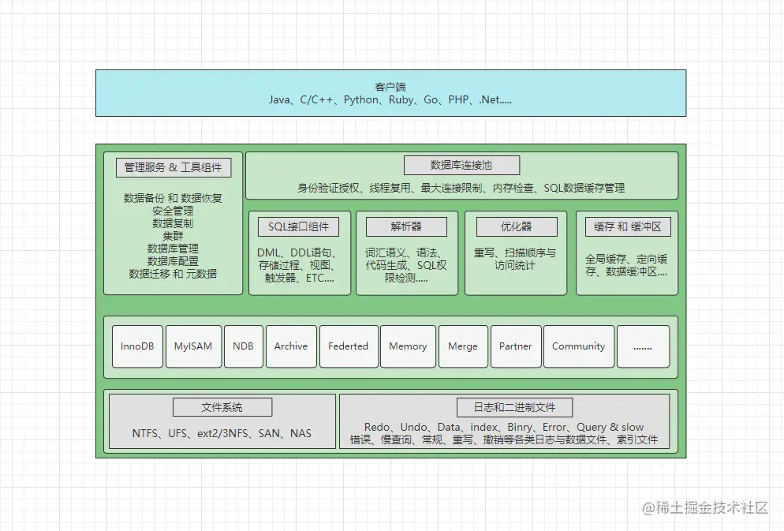
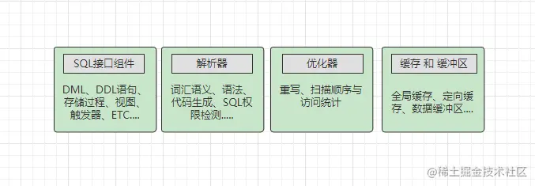

MYSQL
MySQL
从上往下看，依次会分为网络连接层、系统服务层、存储引擎层、以及文件系统层，往往编写SQL后，都会遵守着MySQL的这个架构往下走。
- 连接层：主要是指数据库连接池，会负责处理所有客户端接入的工作。
- 服务层：主要包含
SQL接口、解析器、优化器以及缓存缓冲区四块区域。 - 存储引擎层：这里是指
MySQL支持的各大存储引擎，如InnoDB、MyISAM等。 - 文件系统层：涵盖了所有的日志，以及数据、索引文件，位于系统硬盘上。
show processlist;命令查询所有正在运行的线程
一、数据库连接池(Connection Pool)
连接池的最大线程数可以通过参数max-connections来控制，如果到来的客户端连接超出该值时，新到来的连接都会被拒绝，关于最大连接数的一些命令主要有两条：
show variables like '%max_connections%';：查询目前DB的最大连接数。set GLOBAL max_connections = 200;：修改数据库的最大连接数为指定值。
1、系统服务层
在SQL中会分为五大类：
DML：数据库操作语句，比如update、delete、insert等都属于这个分类。DDL：数据库定义语句，比如create、alter、drop等都属于这个分类。DQL：数据库查询语句，比如最常见的select就属于这个分类。DCL：数据库控制语句，比如grant、revoke控制权限的语句都属于这个分类。TCL：事务控制语句，例如commit、rollback、setpoint等语句属于这个分类。
2、缓存&缓冲
缓冲区的设计主要是：为了通过内存的速度来弥补磁盘速度较慢对数据库造成的性能影响。在数据库中读取某页数据操作时，会先将从磁盘读到的页存放在缓冲区中，后续操作相同页的时候，可以基于内存操作。
一般来说，当你对数据库进行写操作时，都会先从缓冲区中查询是否有你要操作的页，如果有，则直接对内存中的数据页进行操作（例如修改、删除等），对缓冲区中的数据操作完成后，会直接给客户端返回成功的信息，然后MySQL会在后台利用一种名为Checkpoint的机制，将内存中更新的数据刷写到磁盘。
同时缓冲区是与存储引擎有关的，不同的存储引擎实现也不同，比如InnoDB的缓冲区叫做innodb_buffer_pool，而MyISAM则叫做key_buffer。
3、日志模块
在MySQL中主要存在七种常用的日志类型，如下：
binlog二进制日志，主要记录MySQL数据库的所有写操作（增删改）。redo-log重做/重写日志，MySQL崩溃时，对于未落盘的操作会记录在这里面，用于重启时重新落盘（InnoDB专有的）。undo-logs撤销/回滚日志：记录事务开始前[修改数据]的备份，用于回滚事务。error-log：错误日志：记录MySQL启动、运行、停止时的错误信息。general-log常规日志，主要记录MySQL收到的每一个查询或SQL命令。slow-log：慢查询日志，主要记录执行时间较长的SQL。relay-log：中继日志，主要用于主从复制做数据拷贝。
二、索引
1、创建索引
CREATE INDEX indexName ON tableName (columnName(length) [ASC**|**DESC]); |
indexName：当前创建的索引，创建成功后叫啥名字。tableName：要在哪张表上创建一个索引，这里指定表名。columnName：要为表中的哪个字段创建索引，这里指定字段名。length：如果字段存储的值过长，选用值的前多少个字符创建索引。ASC|DESC：指定索引的排序方式，ASC是升序，DESC是降序，默认ASC。
ALTER TABLE tableName ADD INDEX indexName(columnName(length) [ASC|DESC]); |
2、删除索引
DROP INDEX indexName ON tableName; |
当然，当建立了一条索引后，也可以强制性的为SELECT语句指定索引，如下：
SELECT * FROM table_name FORCE INDEX(index_name) WHERE .....; |
这条命令查询一个表中拥有的索引
SHOW INDEX FROM tableName; |
- ①
Table：当前索引属于那张表。 - ②
Non_unique：目前索引是否属于唯一索引，0代表是的，1代表不是。 - ③
Key_name：当前索引的名字。 - ④
Seq_in_index：如果当前是联合索引，目前字段在联合索引中排第几个。 - ⑤
Column_name：当前索引是位于哪个字段上建立的。 - ⑥
Collation：字段值以什么方式存储在索引中，A表示有序存储，NULL表无序。 - ⑦
Cardinality：当前索引的散列程度，也就是索引中存储了多少个不同的值。 - ⑧
Sub_part：当前索引使用了字段值的多少个字符建立，NULL表示全部。 - ⑨
Packed：表示索引在存储字段值时，以什么方式压缩，NULL表示未压缩， - ⑩
Null：当前作为索引字段的值中，是否存在NULL值，YES表示存在。 - ⑪
Index_type：当前索引的结构（BTREE, FULLTEXT, HASH, RTREE）。 - ⑫
Comment：创建索引时，是否对索引有备注信息。
3、多列索引
当建立多列索引后，一条SELECT语句，只有当查询条件中了包含了多列索引的第一个字段时，才能使用多列索引，下面举个栗子。
比如在用户表中，通过id、name、age三个字段建立一个多列索引
-- 无法使用多列索引的SQL语句 |
4、全文索引
全文索引类似于ES、Solr搜索中间件中的分词器，或者说和之前常用的like+%模糊查询很类似，它只能创建在CHAR、VARCHAR、TEXT等这些文本类型字段上，而且使用全文索引查询时，条件字符数量必须大于3才生效。当然，还是举个栗子才有感觉：
MYSQL各个索引的优劣势
1、主键索引
数据表的主键，最好选用带顺序性的值，否则有可能掉入主键索引的“陷阱”中。
2、前缀索引
由于其索引节点中，未存储一个字段的完整值，所以
MySQL也无法通过前缀索引来完成ORDER BY、GROUP BY等分组排序工作，同时也无法完成覆盖扫描等操作。
3、唯一索引
如果
COLUMN_XX字段上建立的是唯一索引，当找到一条数据后就会立马停下检索，因此本身建立唯一索引的字段值就具备唯一性。
但插入数据时就不同了，因为要确保数据不重复，所以插入前会检查一遍表中是否存在相同的数据。但普通索引则不需要考虑这个问题，因此普通索引的数据插入会快一些。
4、哈希索引
但哈希结构的致命问题在于无序，也就是无法基于哈希索引的字段做排序、分组等工作。
建立索引时遵循的原则
建立索引时，需要遵守的一些原则：
- ①经常频繁用作查询条件的字段应酌情考虑为其创建索引。
- ②表的主外键或连表字段，必须建立索引，因为能很大程度提升连表查询的性能。
- ③建立索引的字段，一般值的区分性要足够高，这样才能提高索引的检索效率。
- ④建立索引的字段，值不应该过长，如果较长的字段要建立索引，可以选择前缀索引。
- ⑤建立联合索引，应当遵循最左前缀原则，将多个字段之间按优先级顺序组合。
- ⑥经常根据范围取值、排序、分组的字段应建立索引，因为索引有序，能加快排序时间。
- ⑦对于唯一索引，如果确认不会利用该字段排序，那可以将结构改为
Hash结构。 - ⑧尽量使用联合索引代替单值索引，联合索引比多个单值索引查询效率要高。
同时，除开上述一些建立索引的原则外，在建立索引时还需有些注意点：
- ❶值经常会增删改的字段，不合适建立索引，因为每次改变后需维护索引结构。
- ❷一个字段存在大量的重复值时，不适合建立索引，比如之前举例的性别字段。
- ❸索引不能参与计算，因此经常带函数查询的字段，并不适合建立索引。
- ❹一张表中的索引数量并不是越多越好，一般控制在
3，最多不能超过5。 - ❺建立联合索引时，一定要考虑优先级，查询频率最高的字段应当放首位。
- ❻当表的数据较少，不应当建立索引，因为数据量不大时，维护索引反而开销更大。
- ❼索引的字段值无序时，不推荐建立索引，因为会造成页分裂，尤其是主键索引。
联合索引的最左前缀原则
联合索引的最左前缀原则，道理很简单的，就是组成联合索引的多个列，越靠左边优先级越高，同时也只有SQL查询条件中，包含了最左的字段，才能使用联合索引，例如：
-- 基于上面的哪个X、Y、Z联合索引 |
执行分析工具 - Explain
EXPLAIN SELECT * FROM `zz_users`; |
id：这是执行计划的ID值，这个值越大，表示执行的优先级越高。
select_type：当前查询语句的类型，有如下几个值：
simple：简单查询。primary：复杂查询的外层查询。subquery：包含在查询语句中的子查询。derived：包含在FROM中的子查询。
table：表示当前这个执行计划是基于那张表执行的。
type：当前执行计划查询的类型，有几种情况：
all：表示走了全表查询，未命中索引或索引失效。system：表示要查询的表中仅有一条数据。const：表示当前SQL语句的查询条件中，可以命中索引查询。range：表示当前查询操作是查某个区间。eq_ref：表示目前在做多表关联查询。ref：表示目前使用了普通索引查询。index：表示目前SQL使用了辅助索引查询。
possible_keys：执行SQL时，优化器可能会选择的索引（最后执行不一定用）。
key：查询语句执行时，用到的索引名字。
key_len：这里表示索引字段使用的字节数。
ref：这里显示使用了那种查询的类型。
rows：当前查询语句可能会扫描多少行数据才能检索出结果。
Extra：这里是记录着额外的一些索引使用信息，有几种状态：
using index：表示目前使用了覆盖索引查询（稍后讲）。using where：表示使用了where子句查询，通常表示没使用索引。using index condition：表示查询条件使用到了联合索引的前面几个字段。using temporary：表示使用了临时表处理查询结果。using filesort：表示以索引字段之外的方式进行排序，效率较低。select tables optimized away：表示在索引字段上使用了聚合函数
索引失效
查询中带有OR会导致索引失效
模糊查询中like以%开头导致索引失效
字符类型查询时不带引号导致索引失效
-- 先插入一条user_name = 1111 的数据
INSERT INTO `zz_users` VALUES(4,"1111","男","4321","2022-09-17 23:48:29");
EXPLAIN SELECT * FROM `zz_users` WHERE user_name = 111;索引字段参与计算导致索引失效
字段被用于函数计算导致索引失效
违背最左前缀原则导致索引失效
不同字段值比对导致索引失效
EXPLAIN SELECT * FROM `zz_users` WHERE user_name = user_sex;
反向范围操作
一般来说，如果
SQL属于正向范围查询，例如>、<、between、like、in...等操作时，索引是可以正常生效的，但如果SQL执行的是反向范围操作，例如NOT IN、NOT LIKE、IS NOT NULL、!=、<>...等操作时，就会出现问题，例如：EXPLAIN SELECT * FROM `zz_users` WHERE user_id NOT IN(1,2,3);
MyISAM引擎的表，在磁盘中有三个文件：
zz_myisam_index.frm：该文件中存储表的结构信息。zz_myisam_index.MYD：该文件中存储表的行数据。zz_myisam_index.MYI：该文件中存储表的索引数据。
也就是说，MyISAM引擎的表数据和索引数据，是分别放在两个不同的磁盘文件中存储的，这也意味着MyISAM引擎并不支持聚簇索引，因为聚簇索引要求表数据和索引数据一起存储在同一块空间，而MyISAM的.MYI索引文件中，存储的是表数据所在的地址指针。
InnoDB引擎的表，在磁盘中仅有两个文件：
zz_innodb_index.frm：该文件中存储表的结构信息。zz_innodb_index.ibd：该文件中存储表的行数据和索引数据。
因为InnoDB引擎中，表数据和索引数据都一起放在.ibd文件中，也就代表着索引数据和表数据是处于同一块空间存储的，这符合聚簇索引的定义，因此InnoDB支持聚簇索引。
三、事务
概念
Atomicity原子性
指组成一个事务的一组SQL要么全部执行成功，要么全部执行失败，事务中的一组SQL会被看成一个不可分割的整体，当成一个操作看待。
Consistency一致性
一致性也比较好理解，也就是不管事务发生的前后，MySQL中原本的数据变化都是一致的，也就是DB中的数据只允许从一个一致性状态变化为另一个一致性状态。这句话似乎听起来有些绕，不太好理解对嘛？简单解释一下就是：一个事务中的所有操作，要么一起改变数据库中的数据，要么都不改变，对于其他事务而言，数据的变化是一致的。
Isolation独立性/隔离性
指多个事务之间都是独立的，相当于每个事务都被装在一个箱子中，每个箱子之间都是隔开的，相互之间并不影响。
Durability持久性
持久性是指一个事务一旦被提交，它会保持永久性，所更改的数据都会被写入到磁盘做持久化处理，就算MySQL宕机也不会影响数据改变，因为宕机后也可以通过日志恢复数据。
手动管理事务
start transaction | begin | begin work：开启一个事务commit：提交一个事务rollback：回滚一个事务
-- 开启一个事务 |
事务回滚点
在MySQL中提供了两个关于事务回滚点的命令：
savepoint point_name：添加一个事务回滚点rollback to point_name：回滚到指定的事务回滚点
-- 先查询一次用户表 |
MySQL事务的隔离机制
在MySQL中，事务隔离机制分为了四个级别：
- ①
Read uncommitted/RU：读未提交 - ②
Read committed/RC：读已提交 - ③
Repeatable read/RR：可重复读(MySQL默认) - ④
Serializable：序列化/串行化
脏读、幻读、不可重复读问题
脏读问题
脏读的意思是指一个事务读到了其他事务还未提交的数据，也就是当前事务读到的数据，由于还未提交，因此有可能会回滚。
不可重复读问题
不可重复读问题是指在一个事务中，多次读取同一数据，先后读取到的数据不一致。
幻读问题
幻读：指同一个事务内多次查询返回的结果集不一样。比如同一个事务A，在第一次查询表的数据行数时，发现表中有n条行记录，但是第二次以同等条件查询时，却发现有n+1条记录，这就好像产生了幻觉。
发生幻读问题的原因是在于：另外一个事务在第一个事务要处理的目标数据范围之内新增了数据，然后先于第一个事务提交造成的问题。
①读未提交
处于该隔离级别的数据库，脏读、不可重复读、幻读问题都有可能发生。
这种隔离级别是基于「写互斥锁」实现的，当一个事务开始写某一个数据时，另外一个事务也来操作同一个数据，此时为了防止出现问题则需要先获取锁资源，只有获取到锁的事务，才允许对数据进行写操作，同时获取到锁的事务具备排他性/互斥性，也就是其他线程无法再操作这个数据。
但虽然这个级别中，写同一数据时会互斥，但读操作却并不是互斥的，也就是当一个事务在写某个数据时，就算没有提交事务，其他事务来读取该数据时，也可以读到未提交的数据，因此就会导致脏读、不可重复读、幻读一系列问题出现。
②读已提交
处于该隔离级别的数据库，解决了脏读问题，不可重复读、幻读问题依旧存在。
在这个隔离级别中，对于写操作同样会使用「写互斥锁」，也就是两个事务操作同一事务时，会出现排他性，而对于读操作则使用了一种名为MVCC多版本并发控制的技术处理，也就是有事务中的SQL需要读取当前事务正在操作的数据时，MVCC机制不会让另一个事务读取正在修改的数据，而是读取上一次提交的数据（也就是读原本的老数据）。
③可重复读
处于该隔离级别的数据库，解决了脏读、不可重复读问题，幻读问题依旧存在。
在可重复读级别中，则不会每次查询时都创建新的ReadView，而是在一个事务中，只有第一次执行查询会创建一个ReadView，在这个事务的生命周期内，所有的查询都会从这一个ReadView中读取数据，从而确保了一个事务中多次读取相同数据是一致的，也就是解决了不可重复读问题。
④序列化/串行化
处于该隔离级别的数据库，解决了脏读、不可重复读、幻读问题都不存在。
序列化意思是将所有的事务按序排队后串行化处理，也就是操作同一张表的事务只能一个一个执行，事务在执行前需要先获取表级别的锁资源，拿到锁资源的事务才能执行，其余事务则陷入阻塞，等待当前事务释放锁。
-- 方式①：查询当前数据库的隔离级别 |
MySQL事务实现原理
单条SQL的事务机制
任意一条写SQL的执行都会记录三个日志：undo-log、redo-log、bin-log。
undo-log：主要记录SQL的撤销日志，比如目前是insert语句，就记录一条delete日志。redo-log：记录当前SQL归属事务的状态，以及记录修改内容和修改页的位置。bin-log：记录每条SQL操作日志，只要是用于数据的主从复制与数据恢复/备份。
redo-log是一种WAL(Write-ahead logging)预写式日志，在数据发生更改之前会先记录日志，也就是在SQL执行前会先记录一条prepare状态的日志，然后再执行数据的写操作。
MySQL是基于磁盘的，但磁盘的写入速度相较内存而言会较慢，因此MySQL-InnoDB引擎中不会直接将数据写入到磁盘文件中，而是会先写到BufferPool缓冲区中，当SQL被成功写入到缓冲区后，紧接着会将redo-log日志中相应的记录改为commit状态，然后再由MySQL刷盘机制去做具体的落盘操作。
-- 先记录一条状态为 prepare 的日志 |
四、MySQL锁机制
MySQL的锁机制与索引机制类似，都是由存储引擎负责实现的
以锁粒度的维度划分：
- ①表锁：
- 全局锁：加上全局锁之后，整个数据库只能允许读，不允许做任何写操作。
- 元数据锁 /
MDL锁：基于表的元数据加锁，加锁后整张表不允许其他事务操作。 - 意向锁：这个是
InnoDB中为了支持多粒度的锁，为了兼容行锁、表锁而设计的。 - 自增锁 /
AUTO-INC锁：这个是为了提升自增ID的并发插入性能而设计的。
- ②页面锁
- ③行锁：
- 记录锁 /
Record锁：也就是行锁，一条记录和一行数据是同一个意思。 - 间隙锁 /
Gap锁：InnoDB中解决幻读问题的一种锁机制。 - 临建锁 /
Next-Key锁：间隙锁的升级版，同时具备记录锁+间隙锁的功能。
- 记录锁 /
以互斥性的维度划分：
- 共享锁 /
S锁 Shared Lock：不同事务之间不会相互排斥、可以同时获取的锁。 - 排他锁 /
X锁 Exclusive Lock：不同事务之间会相互排斥、同时只能允许一个事务获取的锁。 - 共享排他锁 /
SX锁：MySQL5.7版本中新引入的锁，主要是解决SMO带来的问题。
以操作类型的维度划分：
- 读锁：查询数据时使用的锁。
- 写锁：执行插入、删除、修改、
DDL语句时使用的锁。
以加锁方式的维度划分：
- 显示锁：编写
SQL语句时，手动指定加锁的粒度。 - 隐式锁：执行
SQL语句时，根据隔离级别自动为SQL操作加锁。
以思想的维度划分：
- 乐观锁：每次执行前认为自己会成功，因此先尝试执行，失败时再获取锁。
- 悲观锁：每次执行前都认为自己无法成功，因此会先获取锁，然后再执行。
共享锁
SELECT ... LOCK IN SHARE MODE; |
示例
-- 窗口1： |
排他锁
排他锁并不是只能用于写操作，对于一个读操作，咱们也可以手动的指定为获取排他锁，当一个事务在读数据时，获取了排他锁，那当其他事务来读、写同一数据时，都会被排斥，比如事务T1对ID=88的这条数据加了一个排他锁，此时T2来加排他锁读取这条数据，T3来修改这条数据，都会被T1排斥。
begin; |
表锁
一张表只能存在一个同一类型的表锁。
InnoDB是一个支持多粒度锁的存储引擎，它的锁机制是基于聚簇索引实现的，当SQL执行时，如果能在聚簇索引命中数据，则加的是行锁，如无法命中聚簇索引的数据则加的是表锁，比如：
select * from `zz_users` for update; |
这条SQL就无法命中聚簇索引，此时自然加的就是表级别的排他锁，但是这个表级锁，并不是真正意义上的表锁，是一个“伪表锁”，但作用是相同的，锁了整张表。
元数据锁(Meta Data Lock)
更改表结构时使用
意向锁（Intention Lock）
当事务T2尝试获取一个表级锁时，就会先看一下表上是否有意向锁，如果有的话再判断一下与自身是否冲突，比如表上存在一个意向共享锁，目前T2要获取的是表级别的读锁，那自然不冲突可以获取。但反之，如果T2要获取一个表记的写锁时，就会出现冲突，T2事务则会陷入阻塞，直至T1释放了锁（事务结束）为止。
自增锁（AUTO-INC Lock）
自增锁主要负责维护并发事务下自增列的顺序
innodb_autoinc_lock_mode = 0：传统模式。innodb_autoinc_lock_mode = 1：连续模式（MySQL8.0以前的默认模式）。innodb_autoinc_lock_mode = 2：交错模式（MySQL8.0之后的默认模式）。
MySQL中可能出现的三种插入类型：
- 普通插入：指通过
INSERT INTO table_name(...) VALUES(...)这种方式插入。 - 批量插入：指通过
INSERT ... SELECT ...这种方式批量插入查询出的数据。 - 混合插入：指通过
INSERT INTO table_name(id,...) VALUES(1,...),(NULL,...),(3,...)这种方式插入，其中一部分指定ID，一部分不指定。
行锁
记录锁（Record Lock）
实际上就是行锁
-- 获取行级别的 共享锁 |
间隙锁（Gap Lock）
主要是用来解决幻读问题的
乐观锁
每次执行都认为只会有自身一条线程操作，因此无需拿锁直接执行。
在MySQL中则可以通过version版本号+CAS的形式实现乐观锁，也就是在表中多设计一个version字段，然后在SQL修改时以如下形式操作：
UPDATE ... SET version = version + 1 ... WHERE ... AND version = version; |
乐观锁更加适用于读大于写的业务场景，频繁写库的业务则并不适合加乐观锁
悲观锁
在每次执行前必须获取到锁，然后才能继续往下执行，而数据库中的排他锁，就是一种典型的悲观锁类型。
五、MySQL-MVCC机制
MVCC机制的全称为Multi-Version Concurrency Control，即==多版本并发控制技术==，主要是为了提升数据库并发性能而设计的，其中采用更好的方式处理了读-写并发冲突，做到即使有读写冲突时，也可以不加锁解决，从而确保了任何时刻的读操作都是非阻塞的。==只有InnoDB实现了MVCC机制==
1、MySQL-MVCC多版本并发控制
MySQL中的多版本并发控制，也和上面给出的例子类似，毕竟回想一下，脏读、不可重复读、幻读问题都是由于多个事务并发读写导致的，但这些问题都是基于最新版本的数据并发操作才会出现，那如果读、写的事务操作的不是同一个版本呢？比如写操作走新版本，读操作走老版本，这样是不是无论执行写操作的事务干了啥，都不会影响读的事务？答案是Yes。
不过要稍微记住，
MySQL中仅在RC读已提交级别、RR可重复读级别才会使用MVCC机制，Why？
因为如果是RU读未提交级别，既然都允许存在脏读问题、允许一个事务读取另一个事务未提交的数据，那自然可以直接读最新版本的数据，因此无需MVCC介入。
同时如若是Serializable串行化级别，因为会将所有的并发事务串行化处理，也就是不论事务是读操作，亦或是写操作，都会被排好队一个个执行，这都不存在所谓的多线程并发问题了，自然也无需MVCC介入。
2、MySQL-MVCC机制实现原理
MVCC机制主要通过隐藏字段、Undo-log日志、ReadView这三个东西实现的。
隐藏主键-ROW_ID(6bytes)
对于InnoDB引擎的表而言，由于其表数据是按照聚簇索引的格式存储，因此通常都会选择主键作为聚簇索引列，然后基于主键字段构建索引树，但如若表中未定义主键，则会选择一个具备唯一非空属性的字段，作为聚簇索引的字段来构建树。
当两者都不存在时，
InnoDB就会隐式定义一个顺序递增的列ROW_ID来作为聚簇索引列。
六、MySQL死锁
1、锁超时机制
show variables like 'innodb_lock_wait_timeout'; |
2、死锁检测算法 wait-for graph
wait-for graph算法被启用后，会要求MySQL收集两个信息：
- 锁的信息链表：目前持有每个锁的事务是谁。
- 事务等待链表：阻塞的事务要等待的锁是谁。
但出现死锁问题时，
MySQL会选择哪个事务回滚呢？之前分析过，当一个事务在执行SQL更改数据时，都会记录在Undo-log日志中，Undo量越小的事务，代表它对数据的更改越少，同时回滚的代价最低，因此会选择Undo量最小的事务回滚（如若两个事务的Undo量相同，会选择回滚触发死锁的事务）。
3、如何避免死锁产生？
因为死锁的检测过程较为耗时，所以尽量不要等死锁出现后再去解除，而是尽量调整业务避免死锁的产生，一般来说可以从如下方面考虑：
- 合理的设计索引结构，使业务
SQL在执行时能通过索引定位到具体的几行数据，减小锁的粒度。 - 业务允许的情况下，也可以将隔离级别调低，因为级别越低，锁的限制会越小。
- 调整业务
SQL的逻辑顺序，较大、耗时较长的事务尽量放在特定时间去执行（如凌晨对账…）。 - 尽可能的拆分业务的粒度，一个业务组成的大事务，尽量拆成多个小事务，缩短一个事务持有锁的时间。
- 如果没有强制性要求，就尽量不要手动在事务中获取排他锁，否则会造成一些不必要的锁出现，增大产生死锁的几率。
- ……..
2.1、锁的内存结构
在Java中，Synchronized锁是基于Monitor实现的，而ReetrantLock又是基于AQS实现的，那MySQL的锁是基于啥实现的呢？想要搞清楚这点，得先弄明白锁的内存结构，先看图：
InnoDB引擎中，每个锁对象在内存中的结构如上，其中记录的信息也比较多，先全部理清楚后再聊聊锁的实现。
2.1.1、锁的事务信息
其中记录着当前的锁结构是由哪个事务生成的，记录的是指针，指向一个具体的事务。
2.1.2、索引的信息
这个是行锁的特有信息，对于行锁来说，需要记录一下加锁的行数据属于哪个索引、哪个节点，记录的也是指针。
2.1.3、锁粒度信息
这个略微有些复杂，对于不同粒度的锁，其中存储的信息也并不同，如果是表锁，其中就记录了一下是对哪张表加的锁，以及表的一些其他信息。
但如果锁粒度是行锁，其中记录的信息更多，有三个较为重要的：
Space ID：加锁的行数据，所在的表空间ID。Page Number：加锁的行数据，所在的页号。n_bits：使用的比特位，对于一页数据中，加了多少个锁（后续结合讲）。
2.1.4、锁类型信息
对于锁结构的类型，在内部实现了复用，采用一个32bit的type_mode来表示，这个32bit的值可以拆为lock_mode、lock_type、rec_lock_type三部分，如下：
lock_mode：表示锁的模式，使用低四位。
0000/0：表示当前锁结构是共享意向锁，即IS锁。0001/1：表示当前锁结构是排他意向锁，即IX锁。0010/2：表示当前锁结构是共享锁，即S锁。0011/3：表示当前锁结构是排他锁，即X锁。0100/4：表示当前锁结构是自增锁，即AUTO-INC锁。
lock_type：表示锁的类型，使用低位中的5~8位。
LOCK_TABLE：当第5个比特位是1时，表示目前是表级锁。LOCK_REC：当第6个比特位是1时，表示目前是行级锁。
rec_lock_type：表示行锁的具体类型，使用其余位。
LOCK_ORDINARY：当高23位全零时，表示目前是临键锁。LOCK_GAP：当第10位是1时，表示目前是间隙锁。LOCK_REC_NOT_GAP：当第11位是1时，表示目前是记录锁。LOCK_INSERT_INTENTION：当第12位是1时，表示目前是插入意向锁。.....：内部还有一些其他的锁类型，会使用其他位。
is_waiting：表示目前锁处于等待状态还是持有状态，使用低位中的第9位。
0：表示is_waiting=false，即当前锁无需阻塞等待，是持有状态。1：表示is_waiting=true，即当前锁需要阻塞，是等待状态。
 wechat
wechat alipay
alipay